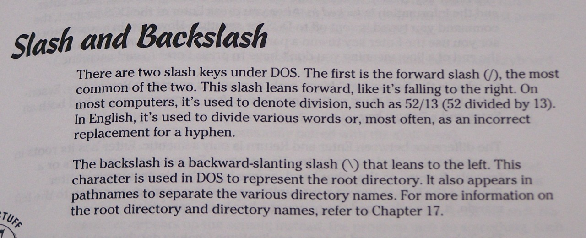

Vintage in terms of material and almost in age (this was published in 1993, while the first edition was from 1991 – all before Windows 95 came out and made using command-line MS-DOS and its alternatives outdated), here we have the Dummies series book DOS For Dummies, 2nd edition.
Written by one of the Dummies’ series authors and computing legend prior to that, Dan Gookin, it’s a fun read and will teach you a few things you can still use under Windows 10 – what to type in the Run line or CMD window to accomplsih things manually, some of which you can’t do effectively in Windows… for example, a batch filetype change (REN *.GIF *.JPG).
I included the page with the differences between / and \ because to this day I still hear people get the two confused when giving URLs.
There is one version floating around (3rd, I believe) that I have a copy of that shows you how to use DOS as well as Windows 95 and 98. It’s very much a glimpse into a lost world.